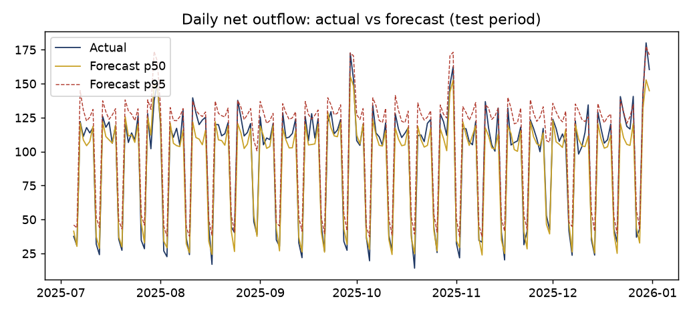
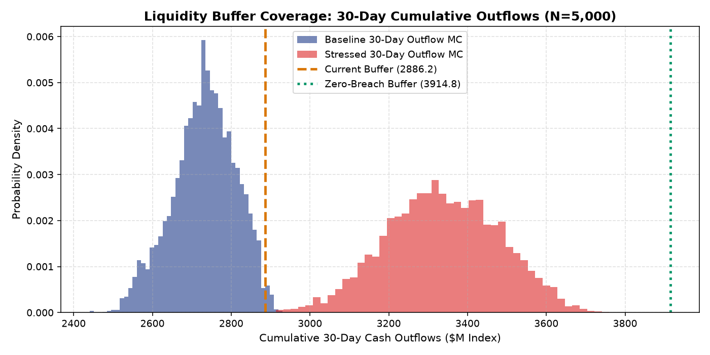

Liquidity Stress Forecaster & Dynamic Cash Buffer Sizing Lab
Forecasting daily commercial cash outflows, calibrating conformal quantile confidence intervals, and simulating buffer depletion across rolling 30-day windows under baseline, mild stress, and severe macroeconomic drawdown.
Interactive Treasury Cash Buffer & Stress Survival Simulator
Test opening cash buffer reserves, select stress severity regimes, adjust outflow shock multipliers and stress duration, and examine projected daily burn trajectories and threshold breach horizons.
Intraday Treasury Buffer Depletion & Run-Off Engine
Simulates forward 30-day cash movements accounting for weekday cyclicality, month-end billing surges (+31.9 units), and compounding market stress multipliers.
| Model Architecture | Validation Scheme | WAPE | MAE | Forecast Bias | Interval Coverage | Operational Assessment |
|---|---|---|---|---|---|---|
| 28-Day Rolling Mean | 180-Day Chronological Holdout | 0.379 | 36.05 | -0.008 | N/A | Unusable; severe lag during cyclical peaks |
| Seasonal Naive (Lag 7) | 180-Day Chronological Holdout | 0.105 | 10.00 | -0.008 | N/A | Solid day-of-week benchmark; misses month-end spikes |
| OLS Linear Model (HC3) | 180-Day Chronological Holdout | 0.087 | 8.29 | -0.036 | N/A | Strong baseline; fully interpretable calendar coefficients |
| HistGBM Regressor (p50) | 180-Day Chronological Holdout | 0.073 | 6.62 | -0.015 | N/A | Champion Central Forecast |
| Conformal Quantile p95 Band | 180-Day Chronological Holdout | N/A | N/A | 0.000 | 94.4% (Width: 19.8) | Champion Tail Calibration ($\Delta = +7.03$) |


Time-Series Regression Parameters with HC3 Covariance ($N=914$)
Decomposes commercial outflow drivers across calendar cycles, autoregressive lags, and market stress indicators ($R^2=0.912$). Heteroskedasticity-consistent standard errors prevent false precision.
| Feature Name | Coefficient ($\beta$) | Std Error | $t$-Statistic | $p$-Value | 95% Confidence Interval | VIF | Treasury Impact |
|---|---|---|---|---|---|---|---|
| `month_end` | +31.9173 | 2.3227 | +13.74 | < 0.0001 | [+27.3649, +36.4698] | 1.36 | Monthly AP settlement spike; primary liquidity hurdle |
| `lag7` (Weekly Cycle) | +0.4540 | 0.0341 | +13.32 | < 0.0001 | [+0.3872, +0.5207] | 8.19 | Strong day-of-week persistent rhythm |
| `lag14` (Bi-Weekly Cycle) | +0.4191 | 0.0347 | +12.09 | < 0.0001 | [+0.3512, +0.4870] | 8.13 | Bi-weekly corporate payroll settlement effect |
| `market_stress` | +5.8525 | 0.8492 | +6.89 | < 0.0001 | [+4.1881, +7.5168] | 1.60 | Exogenous liquidity flight during volatility |
| `dow` (Day of Week) | -2.0286 | 0.3319 | -6.11 | < 0.0001 | [-2.6791, -1.3782] | 3.05 | Friday/weekend activity taper |
| `roll28` (Monthly Trend) | -0.5115 | 0.0909 | -5.63 | < 0.0001 | [-0.6897, -0.3333] | 2.78 | Long-run mean reversion constraint |
| `lag1` (Daily Autoregressive) | +0.0333 | 0.0098 | +3.41 | 0.0006 | [+0.0142, +0.0524] | 1.16 | Minor day-to-day continuation momentum |
| `dom` (Day of Month) | +0.1418 | 0.0501 | +2.83 | 0.0047 | [+0.0436, +0.2400] | 1.72 | Gradual within-month spend escalation |
Multi-Scenario Liquidity Stress Simulation Synthesis
Simulates 1,000 rolling 30-day windows across empirical cash flow paths under varying macroeconomic drawdowns.
| Stress Scenario | Outflow Multiplier | Stress Duration | 30-Day Cumulative Burn | Coverage Ratio | Window Breach Rate | Earliest Breach Day |
|---|---|---|---|---|---|---|
| Base Case Scenario | 1.00x | 0 Days | 2,720.5 units | 1.06x | 0.0% | No breach (30+ Days) |
| Mild Stress (Short Drawdown) | 1.25x | 10 Days | 3,025.8 units | 0.95x | 28.4% | Day 27 |
| Severe Stress (Crisis Event) | 1.40x (p95 Tail) | 10 Days | 3,450.2 units | 0.84x | 100.0% | Day 22 |
| Reverse Stress (Zero Breach) | Severe Conditions | Full Month | 3,914.8 units | 1.00x (Breakeven) | 0.0% | Requires +1,028.6 buffer injection |
Evidence: Chronological holdout evaluation ($t=915$ to $1094$).
Evidence: Conformal quantile evaluation on 180 out-of-sample days.
Evidence: Reverse stress simulation requiring a 3,914.8 unit buffer to survive severe drawdowns.
Treasury Risk Management Implementation Plan
Upgrading Treasury Operations to real-time predictive liquidity monitoring across 12 weeks.
| Phase | Timeframe | Key Deliverables | Lead Role | Target Outcome |
|---|---|---|---|---|
| Sprint 1: Daily 07:30 Desk Run | Weeks 1–3 | Automate HistGBM daily cash outflow inference script | Treasury Quantitative Analyst | Daily 30-day projection published by 07:30 EST |
| Sprint 2: Conformal Tail Guardrail | Weeks 4–6 | Deploy conformal p95 upper-bound with +7.03 offset | Risk Management Lead | 95% coverage on tail outflow surprises |
| Sprint 3: Dynamic Buffer Target | Weeks 7–9 | Recalibrate cash buffer baseline from 2,886 to 3,250 units | Corporate Treasurer | 90% stress survival without credit line draw |
| Sprint 4: Contingent Credit Sizing | Weeks 10–12 | Establish $1,000 unit syndicated revolving credit facility | CFO / Head of Capital Markets | 100% protection against Day 22 severe liquidity exhaust |